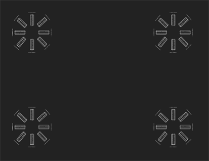

静止跟踪依赖于良好的输入来产生良好的跟踪输出，所以拍摄摄像机能够正确解释的良好静止照片是至关重要的。
摄影师根据剧照的主题有不同的要求。例如，捕捉的近平面场景的剧照与室内场景或模型所需的剧照不同。
• 无论如何，不要裁剪你的剧照或变换它们，比如旋转。
• 避免剧照之间的比例和角度发生巨大变化。
• 为了确保您在 3 到 4 幅图像中捕捉场景的每个部分，目标是在帧之间的最大内容变化为 20-25%。
• 当静止帧包含前一帧的大部分时，避免不必要的冗余。
• 避免跟踪包含多个遮挡的剧照 -- 具有复杂重叠的特征可能会导致帧间内容的剧烈变化。
近平面场景的最佳剧照是正面拍摄的，面向主题。在 Nuke 术语，这意味着从右边显示的相机位置拍摄你的剧照。
|
|
|
| 相机定位不正确。 | 正确的相机定位。 |
当围绕一个物体移动时，每 15-25 度拍一张照片应该足够了，所以完整的 360 至少要拍 16 张照片。当然，服用更多可以改善结果。
|
|
|
| 剧照太少了。 | 剧照的最低数量。 |
对于封闭的空间，如室内，从中心向外捕捉静止物，然后围绕外围向内捕捉静止物，而不是从空间中的不同点捕捉静止物。
|
 |
| 不正确的相机定位从不同的点。 |
|
|
|
| 捕捉面向外部的剧照。 | 捕捉面向内心的剧照。 |
|
|